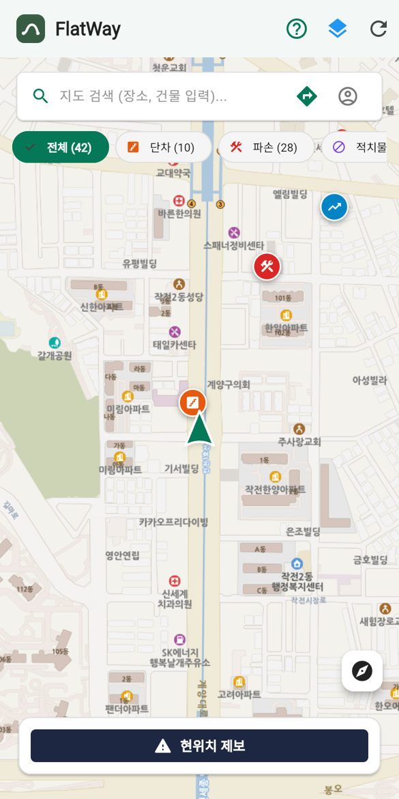
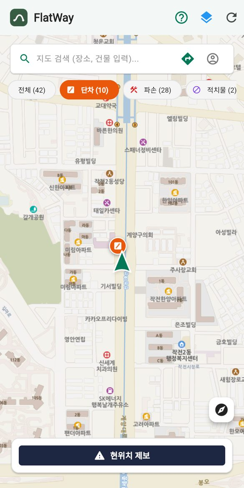
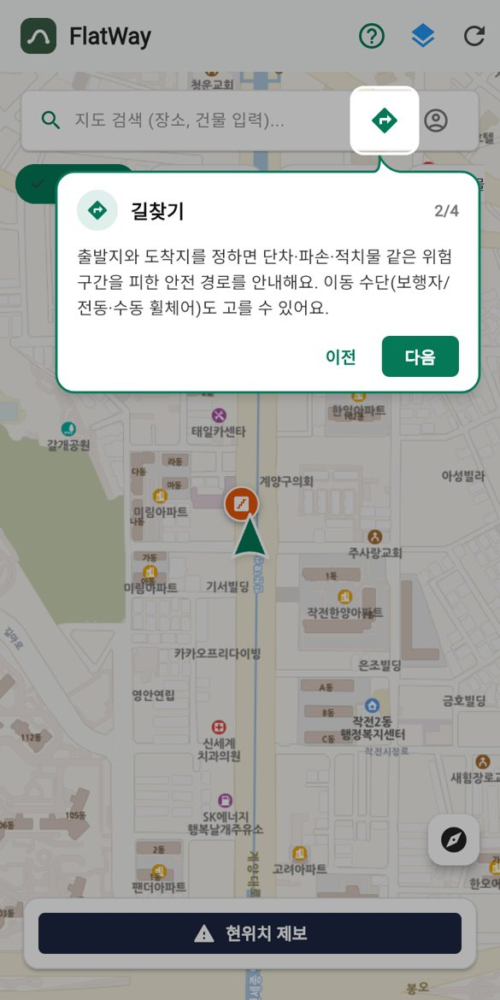
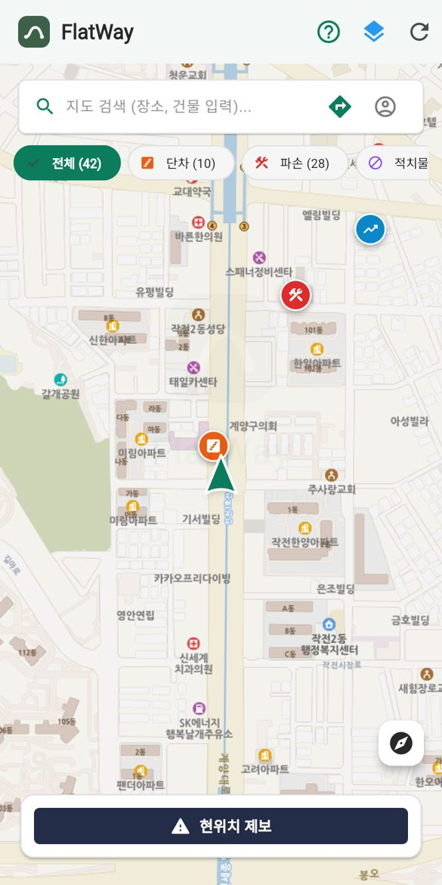

작전여자고등학교 · AI·디지털 기반 문제해결 고도화 발표
휠체어 사용자 및 보행 약자를 위한
안전 경로 길찾기 앱
2026. 11. 7 2026 인천 AI 이래채움 교육 페스티벌
CHAPTER 1 · 왜 만들었나
학교 근처에서 휠체어 사용자가 보도 단차를
넘지 못해 멈춰 계신 모습을 목격했습니다.
다리를 다친 친구가
혼자 다니기 곤란해하는
모습도 보았습니다.
FlatWay · 작전여자고등학교
02 / 20
CHAPTER 1 · 왜 만들었나
1,613만 명
국내 교통약자 · 전체 인구의 31.5%
20~26만 명
일상적으로 휠체어를 사용하는 인구
FlatWay · 작전여자고등학교
03 / 20
CHAPTER 1 · 왜 만들었나
40%
응급실 손상환자 원인 1위는 낙상·추락
10명 중 3명
장애인이 외출 시
이동수단 이용에 어려움을 겪습니다
FlatWay · 작전여자고등학교
04 / 20
CHAPTER 2 · 기존 서비스의 한계
기존의 네이버지도, 카카오 맵
지하철 내부와 건물 장소 정보는 있지만, 실제 보도의 단차·경사·파손 정보는 없습니다.
기존의 장애인 전용 앱·공공 데이터
단차·파손·경사를 종합한 경로 안내가 없고, 지자체 편의시설 데이터는 갱신이 중단되어 실제와 다릅니다.
FlatWay · 작전여자고등학교
05 / 20
CHAPTER 2 · 기존 서비스의 한계
| 카카오맵·네이버 지도 | 휠비 | FlatWay | |
|---|---|---|---|
| 단차·파손 반영 | 없음 | 표시만, 우회 불가 | 위험 정보 기반 자동 우회 |
| 이동수단별 경로 | 미분리 | 미분리 | 보행·전동·수동 휠체어 분리 |
| 건물 내부 연계 | 미지원 | 미지원 | 개발 계획 중 |
| 실시간 반영 | 미지원 | 미지원 | 앱·웹 즉시 동기화 |
※ 건물 내부 연계는 현재 개발 계획 중입니다.
FlatWay · 작전여자고등학교
06 / 20
CHAPTER 3 · FlatWay 핵심 기술
FlatWay 앱 (안드로이드·웹)
지도 · 위험 제보 · 안전 길찾기
관리자 웹 대시보드
위험도·유형별 필터와 히트맵으로 유지보수 현황 파악
실시간 클라우드 데이터베이스(Supabase)
제보·사진·사용자 계정을 저장하고 앱과 웹에 즉시 반영
FlatWay · 작전여자고등학교
07 / 20
CHAPTER 3 · FlatWay 핵심 기술
모바일 앱 전용
이동 수집을 켜고 걸으면 스마트폰 가속도 센서가 노면 충격을 감지합니다.
충격이 기준을 넘으면 GPS 좌표와 함께 단차 후보로 자동 기록합니다.
FlatWay · 작전여자고등학교
08 / 20
CHAPTER 3 · FlatWay 핵심 기술
개발 계획 중
같은 위치를 지나간 다른 사용자의 센서 기록과 비교해 신뢰도 점수를 매깁니다.
50% 미만은 검증 대기, 50% 이상은 정식 위험 핀으로 등록해 허위 제보를 막습니다.
현재는 제보 상세에서 ‘도움이 돼요’ 확인 버튼까지 제공합니다.
FlatWay · 작전여자고등학교
09 / 20
CHAPTER 3 · FlatWay 핵심 기술
같은 목적지라도 이동 수단에 따라 길을 따로 계산합니다.
보행자
전동휠체어
수동휠체어
허용 단차·최대 경사도 직접 입력은 개발 계획 중
※ 길 계산에는 오픈스트리트맵(OpenStreetMap) 도로 데이터를 쓰는 오픈소스 경로 엔진(OSRM)을 사용했어요.
FlatWay · 작전여자고등학교
10 / 20
CHAPTER 4 · 고도화: 우리가 바꾼 것
166개
전체 작업 횟수 (8/19~)
4명
함께 만든 팀원
14개
알고리즘 테스트 통과
4가지
핵심 개선
FlatWay · 작전여자고등학교
11 / 20
CHAPTER 4 · 고도화: 우리가 바꾼 것
휴대폰 카메라로 QR을 스캔하면
설치 없이 바로 열립니다.
temporary-express-flint-jxi3l4g.vercel.app
다음 슬라이드부터는 오른쪽 위 QR로
언제든 접속할 수 있어요.
FlatWay · 작전여자고등학교
12 / 20
CHAPTER 4 · 고도화 ① 웹 서비스
직접 써보기
설치도 가입도 없이
링크나 QR 한 번으로 바로 접속
게스트로 바로 시작
로그인은 필요할 때만

FlatWay · 작전여자고등학교
13 / 20
CHAPTER 4 · 고도화 ② 카테고리
직접 써보기
위험 4종을 아이콘·색으로 구분
단차 · 파손 · 적치물 · 경사
보고 싶은 종류만 골라 보기
칩을 누르면 지도 마커가 바로 걸러져요
제보 화면과 같은 선택지
이름과 아이콘을 하나로 통일했어요
건물 분류는 삭제
위험 정보에 집중하도록 단순화했어요

FlatWay · 작전여자고등학교
14 / 20
CHAPTER 4 · 고도화 ③ 길찾기 기능
직접 써보기
1. 후보 경로 모으기
최단 경로와 대안 경로를 가져와요
2. 점수 매기기
거리에 지나는 위험의 페널티를 더해요 (종류·심각도·단차 높이 반영)
3. 우회로 만들어 비교
가장 위험한 곳의 옆길을 경유해 다시 계산하고, 점수가 가장 낮은 길을 골라요
FlatWay · 작전여자고등학교
15 / 20
CHAPTER 4 · 고도화 ③ 길찾기 기능
직접 써보기
보행자
중간 정도 위험은 감수하고 멀리 돌아가지 않아요
전동휠체어
단차는 아무리 멀어도 피하고, 경사는 멀리 돌아가며 피하진 않아요
수동휠체어
위험이 있으면 아무리 멀어도 위험 없는 길을 골라요
너무 먼 우회(최단 경로의 2.5배 초과)와 왕복 우회는 쓰지 않아요.
길찾기 화면 캡처
(추가 예정)
FlatWay · 작전여자고등학교
16 / 20
CHAPTER 4 · 고도화 ④ 첫 사용 가이드
직접 써보기
처음 접속하면 말풍선 안내
소개 → 길찾기 → 현위치 제보 순서로 4단계
? 버튼으로 언제든 다시
10단계 상세 가이드로 모든 기능 설명
‘다시 보지 않기’ 선택
익숙해지면 안내를 끌 수 있어요


FlatWay · 작전여자고등학교
17 / 20
CHAPTER 5 · 검증과 앞으로
현장 테스트
학교에서 근처 역까지 직접 이동하며 단차·노면 파손·급경사 수집을 확인했어요
알고리즘 테스트 14개 통과
이동 수단별 회피, 너무 먼 우회 제한 등을 코드로 검증했어요
실제 도로·제보 데이터로 확인
작전역에서 계양구청까지 경로에서 위험 요소 1건을 피했어요
발견한 문제는 바로 개선
방향 혼동은 나침반 모드로, 설정 안내가 팝업에 가리던 문제는 즉시 닫히게 고쳤어요
FlatWay · 작전여자고등학교
18 / 20
CHAPTER 5 · 검증과 앞으로
건물 내부 연계
경사로 · 엘리베이터 · 장애인 화장실 정보 통합
나에게 맞춘 기준 입력
허용 단차와 최대 경사도를 직접 설정
센서 교차검증 점수
여러 사용자의 기록으로 제보의 신뢰도 확인
위험 구간을 완전히 피하는 길
도로 데이터를 직접 다뤄 우회 가능성 높이기
FlatWay · 작전여자고등학교
19 / 20
모두에게 더 편한 길을 위해
TEAM · 작전여자고등학교
박진아 · 전서영 · 김보민 · 권나윤
감사합니다
지금 접속해 보세요
FlatWay · 작전여자고등학교
20 / 20